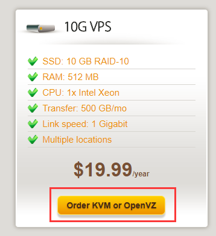
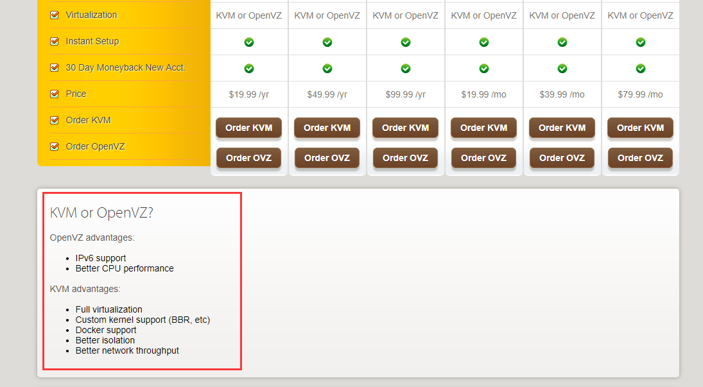
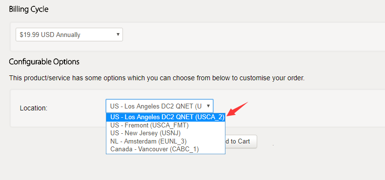
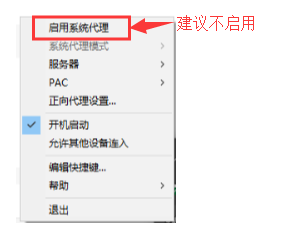
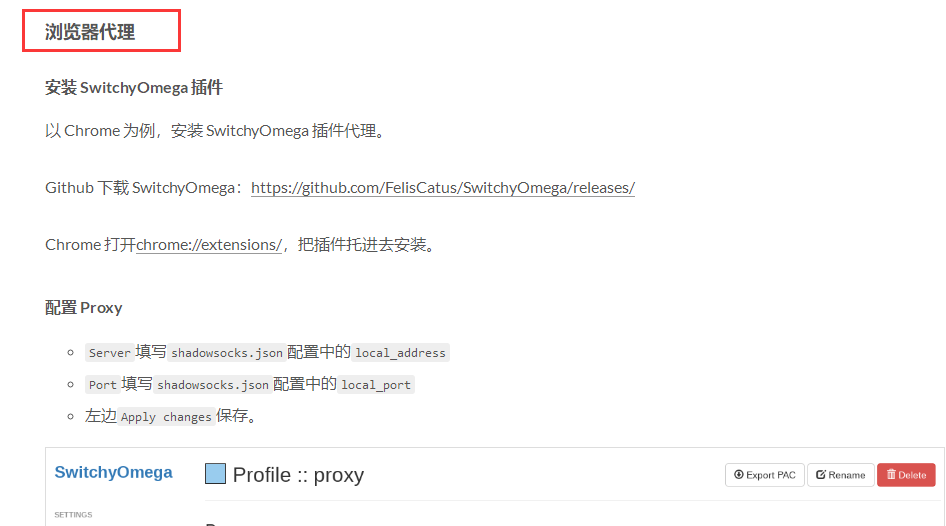
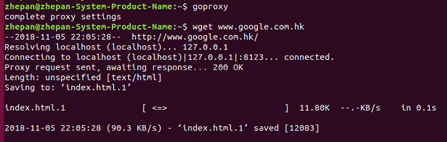
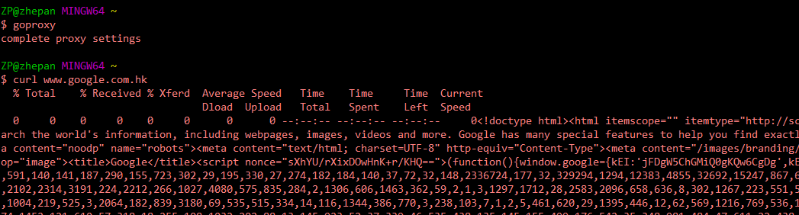

使用搬瓦工VPS搭建Shadowsocks服务
在搬瓦工上搭建Shadowsocks服务的教程请参考这里（之前有个大神写的博客，里面介绍的很详细，不过据说被hexie了，已经打不开了）。下面我主要说一些注意事项，以备参考，避免踩坑。
购买VPS时的注意事项
1. 选择购买哪种VPS？
如果只是用于科学上网，那么不需要购买太高配置的VPS，19.99美元/年的完全够用，1年100多块钱，算是很划算的了。

2. 选择KVM or OpenVZ ？
KVM和OpenVZ是两种不同的VPS虚拟技术。
- OpenVZ是基于Linux内核和作业系统的操作系统级虚拟化技术。OpenVZ允许物理服务器运行多个操作系统，被称虚拟专用服务器（VPS，Virtual Private Server）或虚拟环境（VE, Virtual Environment）。
- KVM是嵌入在Linux操作系统标准内核中的一个虚拟化模块，它能够将一个Linux标准内核转换成为一个VMM，嵌有KVM模块的Linux标准内核可以支持通过kvm tools来进行加载的GuestOS。所以在这样的操作系统平台下，计算机物理硬件层上直接就是VMM虚拟化层，而没有独立出来的HostOS操作系统层。
从下图搬瓦工官网给出的这两者之间的优点对比可以看出，KVM能够支持BBR，所以如果选择OpenVZ的话，是无法使用BBR的，只有KVM架构的VPS才能开启BBR。
- BBR是Google社区开发的一个开源TCP拥塞控制算法，在Linux 4.9及以上的内核版本中支持。
- BBR主要是用于提升上传速度，所以如果在服务端配置BBR的话，提升的是服务端的上传速度，也就是提升了客户端的下载速度。
综上，建议选择KVM虚拟技术，便于开启BBR加速。

3. 选择机房位置
在产品配置页，会看到有一项要选择VPS所在的机房位置，一般来说，离我们近一点的机房会相对稳定一些，其实都差不多，这里推荐选择Los Angeles DC2 QNET。

部署Shadowsocks服务时的注意事项
在网上的一些论坛看到，有些人说用ShadowsocksR（简称SSR）容易被墙，用Shadowsocks（简称SS）要稳一些，所以建议大家使用SS。
- 上面那位大神的教程里介绍了如何在Windows系统上安装和使用Shadowsocks，请自行参考安装。
- 在Linux系统上安装和使用Shadowsocks请参考这里，写的也是非常详细，而且还介绍了开机自启的配置方法。
建议在使用Shadowsocks时，使用浏览器代理
在Windows系统上使用Shadowsocks，启用系统代理时，有时会发现仍不能科学上网。
这是因为Shadowsocks-Win版本对系统代理支持的不好，所以建议使用浏览器代理的方式。

具体配置方法请参考这篇文章的“浏览器代理”章节 。

在Linux系统上运行命令安装Shadowsocks以后，可能会发现在etc目录下，并没有shadowsocks.json，但是有一个shadowsocks目录，里面有个config.json文件。那么具体应该怎么来配置呢？其实以下两种方式都是可行的。
- 像文章中描述的那样，自建一个shadowsocks.json文件，然后添加配置信息。
- 直接修改config.json文件，添加配置信息。
只要确保一点：在后面使用ssllocal -c 命令启动shadowsocks程序时，后面接的路径与你修改的json配置文件的路径一致即可。
目前 SwitchyOmega 插件只支持 Google Chrome 或基于 Chromium 的浏览器 以及 Mozilla Firefox 或基于 Mozilla 的浏览器 ，当然国产浏览器说的什么自主研究的极速内核（如：360极速浏览器）大多都是使用的 Chromium 内核，所以也能安装使用。
但是据说国产浏览器会对浏览器访问的网页进行监控，科学上网久了，会存在被墙（封IP）的风险，所以建议使用Chrome或Firefox浏览器。
Linux环境下，如何让终端Terminal使用Shadowsocks进行科学上网
1. 安装polipo
Polipo是一个轻量级的跨平台代理服务器，可以实现HTTP和SOCKS代理。为了最小化延迟，Polipo管线化多个资源请求，在同一个TCP/IP连接上多路复用。所以我们使用polipo将http代理转换为socks5代理。从而使终端命令行程序（如：wget）可以进行科学上网。
通过apt安装polipo
1 | $ sudo apt-get install polipo |
2. 配置polipo
打开 /etc/polipo/config 文件
1 | sudo vi /etc/polipo/config |
作如下修改，主要是设置socksParentProxy 和 socksProxyType的字段值。
1 | # This file only needs to list configuration variables that deviate |
重启polipo
1 | $ service polipo restart |
设置别名，便于在终端上使用SS代理。
打开用户主目录下的.bashrc文件
1 | cd ~/ |
在 .bashrc文件最后面增加下面几行：
1 | alias goproxy="export http_proxy=http://localhost:8123 https_proxy=http://localhost:8123;echo 'complete proxy settings'" |
保存退出，重启终端Terminal。
3. 测试验证
重启终端Terminal之后，输入以下命令：
1 | $ goproxy |
若显示以下类似结果，则表示Shadowsocks在终端Terminal上配置成功。

如果想要关闭SS代理，则直接在终端执行 disproxy命令即可。
Windows环境下，如何让MinGW使用Shadowsocks进行科学上网
1. 打开Git Bash，即MinGW，输入以下命令，进入用户目录：
1 | cd ~/ |
2. 创建 .bash_profile 文件，并打开它。
1 | vi .bash_profile |
添加以下内容：
1 |
|
保存退出，重启MinGW。
3. 测试验证
重启MinGW之后，输入以下命令，由于我安装的MinGW里面没有wget，所以使用 curl 来测试验证。
1 | $ goproxy |
若显示以下类似结果，即有内容输出，则表示Shadowsocks在MinGW上配置成功。

如果想要关闭SS代理，则直接在MinGW上输入 disproxy命令即可。